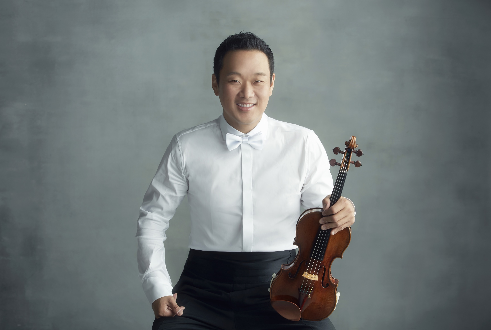
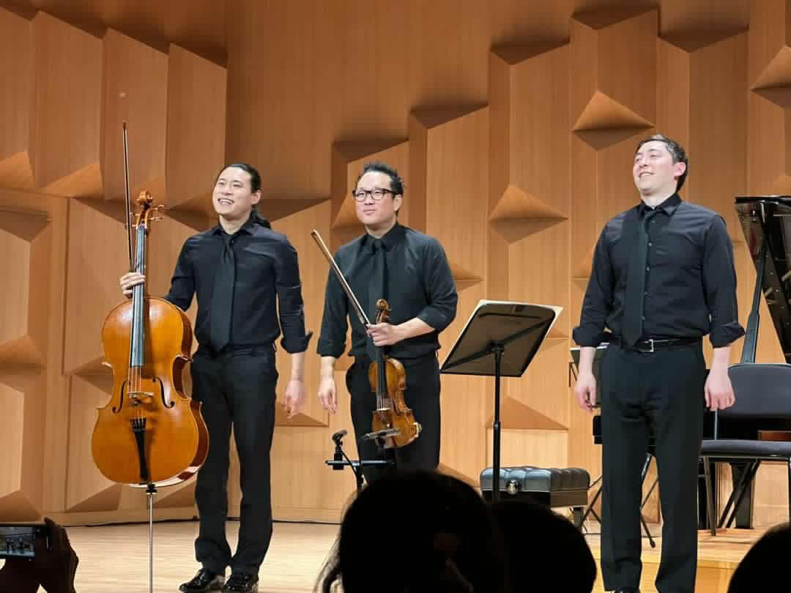

Concertmaster · Pacific Symphony
Dennis Kim
Concertmaster of Pacific Symphony, Eleanor and Michael Gordon Chair. Previously concertmaster of the Hong Kong, Seoul, Tampere and Buffalo Philharmonics.
Photograph by NaYoung Lee
Introduction
Concertmaster to orchestras on four continents.
First appointed a concertmaster at twenty-two, Dennis Kim has since led the Hong Kong Philharmonic — the youngest in that orchestra's history — the Seoul Philharmonic, the Tampere Philharmonic in Finland, and the Buffalo Philharmonic. Since 2018 he has been Concertmaster of Pacific Symphony, where he holds the Eleanor and Michael Gordon Chair.
He has appeared as guest concertmaster on four continents, with ensembles including the BBC Symphony, the London Philharmonic and the Royal Stockholm Philharmonic, and has worked with Riccardo Chailly, Charles Dutoit, Riccardo Muti, André Previn and Sir Simon Rattle.
22
4
13
For the screen
Also heard on the scoring stage.
Alongside the season, Dennis Kim records for film and television in Los Angeles, working with composers including John Williams, John Powell and Alan Menken.
Minions & Monsters
John Powell · 2026
Star Wars: The Rise of Skywalker
John Williams
Moana 2
Walt Disney Animation
and many more →
Chamber music
Trio Barclay.
With cellist Jonah Kim and pianist Sean Kennard, the resident ensemble of the Irvine Barclay Theatre, whose album Beyond the Pacific was released on Orchid Classics in 2026.
